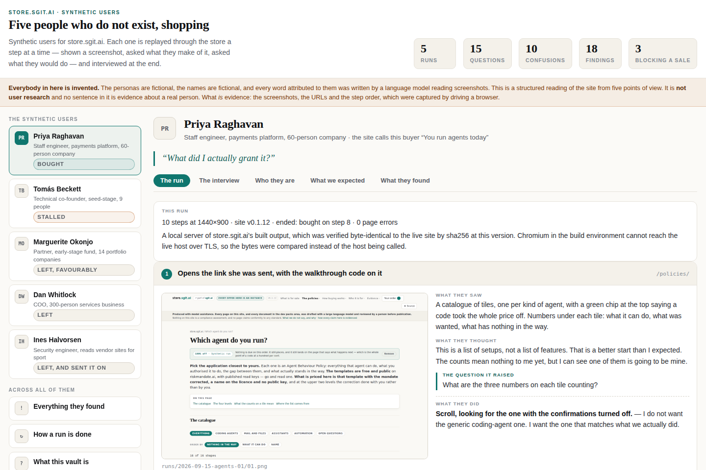
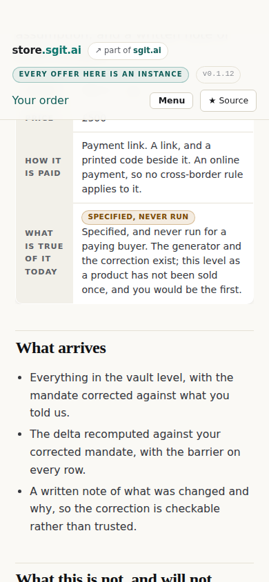
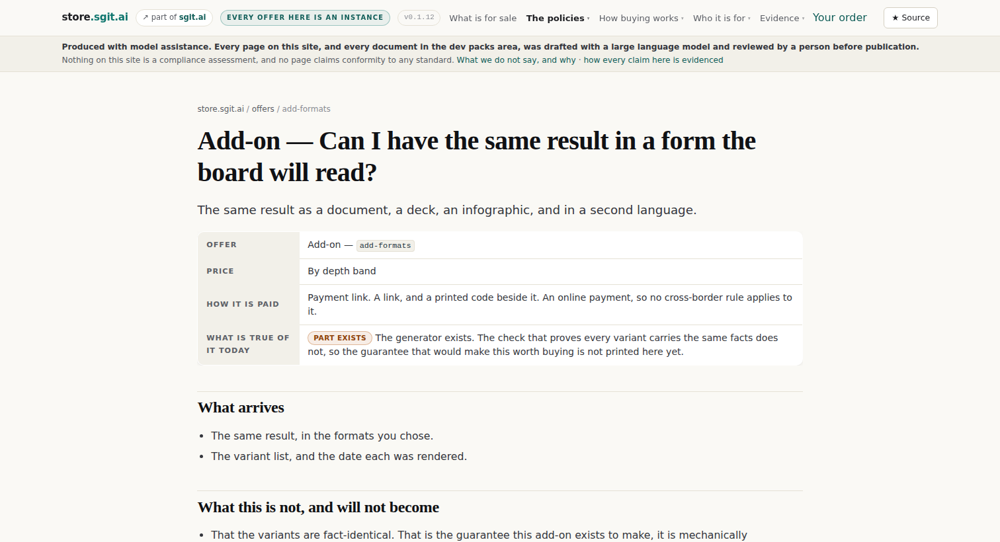
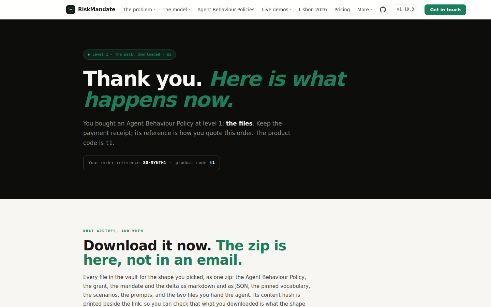
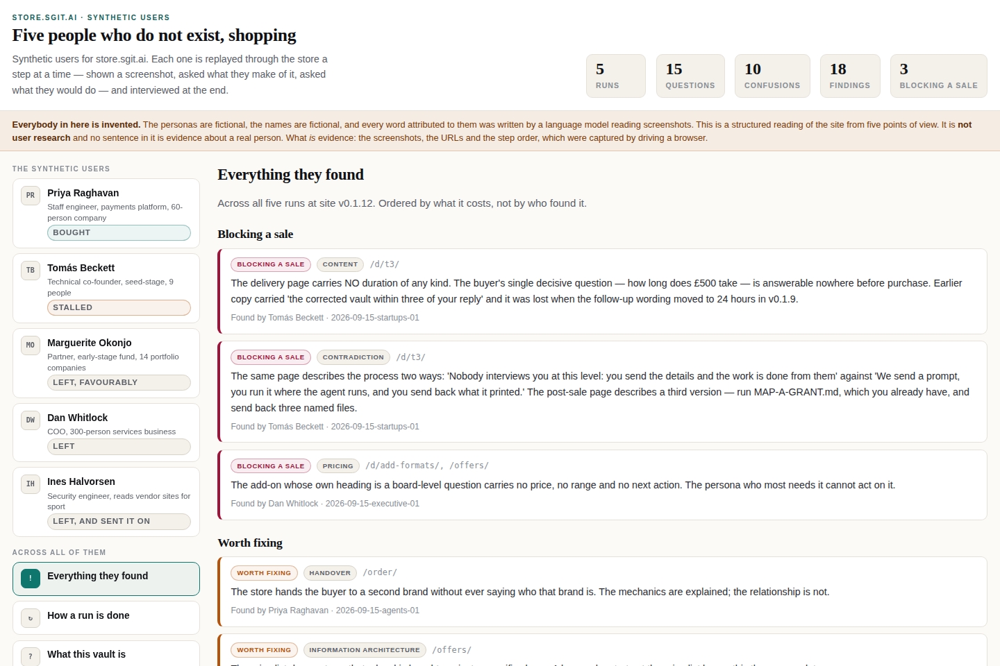

Produced with model assistance. Every page on this site, and every document in the dev packs area, was drafted with a large language model and reviewed by a person before publication.
Five synthetic users walked the store. What that was worth, and what it was not
Five invented buyers were driven through the store a screenshot at a time and interviewed afterwards. They produced eighteen findings, three of which were costing a sale and two of which were this repository’s own regressions. That is the case for the method. The case against it is longer, and it is below the case for.
5personas run
43screenshots
18findings
3blocking a sale
2later confirmed by a human
ReviewerThe agent that built the vault, reading it back. Not an independent review, and the page says so before it says anything else.
SubjectThe synthetic-users vault, and the method inside it
Reviewed15 September 2026, against v0.1.12
KindThe builder — The agent that built the thing, reading it back. Not independent, and every such page says so first.
The vault this review is of
Read-only, and embedded below. The key opens the vault and cannot write to it. The vault holds the five personas, the journey each was expected to take, the protocol, and every run as a record: one screenshot per step, what the persona said they saw, what they thought, what they wanted to know, where they got lost, and what they did next.
Vaultg2hei4u6
Files67
Accessread-only
The read key. It opens the vault and cannot write to it.b70c317b7aa4b6084e05669795dc89e6bf1e46b4e948b9f6c475948ae502823c:g2hei4u6
This page opens a connection, and here is exactly which one. The two surfaces below are the official vault interface, running on dev.vault.sgraph.ai in a frame this page builds. The key does not travel in the address. The frame is opened carrying nothing, it announces itself, and only then is the read key handed over by message with the target origin pinned — so it is not in a URL, not in history, not in a referrer and not in the frame’s storage. Replies from any other origin are ignored. Every page on this site that sells anything still opens nothing at all, and a build check holds it there. One exception, stated because it is real: if the handshake does not complete within twelve seconds the component falls back to opening the vault with the key in the frame’s URL fragment. A fragment is never sent to a server and never appears in a referrer, but it is in that frame’s address. The link above avoids it entirely.
What the method actually is
An agent driving a store by reading the page source finds the buy button every time, and therefore finds no confusion. Confusion is the only thing worth running this for, so the loop is built the other way round: take a screenshot, hand the agent the screenshot, ask what it sees, what it thinks, what it wants to know, where it got lost, and what it does next. Then again, until the persona buys, leaves, or runs out of patience.
Then interview them. Nine questions, asked after the run however it ended. The two useful ones are where did you have to guess and what did you still not know at the end, because a real user rarely tells you either.
What is evidence and what is not, marked on every screen. The screenshots, the URLs, the step order, the viewport sizes and the page-error counts were captured by driving Chromium against the store’s built bytes, verified byte-identical to the live site by sha256. Everything a persona says was written by a model. Those are different kinds of thing and the vault never lets them blur.
The case for: it found things reading the diff would not have
Three findings were costing a sale, and two of those were regressions this repository had introduced four releases earlier and not noticed. The £500 delivery page had lost every duration it once carried, so the founder persona’s single decisive question — how long does this take — was answerable nowhere before purchase. The same page described its own process two ways while the post-sale page described a third.
The count finding is the one that makes the case. The home page said “fifteen applications” and the catalogue rendered “16 of 16 shapes”. Neither is wrong on its own — fifteen published templates plus one tile for a deployment that has no template — and the two numbers are four pages apart. Nothing in a diff surfaces that. It took reading the site as somebody who counts tiles.
And the strongest evidence arrived from outside. A human partner reviewed the same store the same week, independently, and made two of the same points: that £5 reads as a commodity price for something sophisticated, and that the counts on a tile do not land where a reader first meets them. A synthetic run predicted two findings of a real review. That is one data point, not a validation — but it is the only external check this method has, and it passed.
The case against: the agent never chose anything
This is the hole in the middle of it and it is worth stating first. The protocol in the vault says the agent is shown a screenshot and decides what to do next. The runner does not do that. Every run followed a step list written before the run started: go here, click this, scroll to there. The screenshots are real and the reactions were written from them, but no decision in any of the five runs was made by anything except the person who wrote the script.
Which means the thing the journeys promised never happened. Each journey is a hypothesis with the line “the run is allowed to diverge and the divergence is the finding”. Nothing diverged, because nothing could. The most interesting output of a replay — the buyer going somewhere you did not expect — is structurally impossible in this build.
The persona and their reaction were written by the same model in the same pass. A real user contradicts their own profile: they say they are impatient and then read every word. A synthetic one cannot, because the profile is what generates the reaction. This is not a bug to fix, it is a property of the instrument, and the only honest response is to disclose it and never let a synthetic finding stand alone.
And the builder wrote the findings about their own work. Some of the eighteen are things that could have been got by reading the diff — the run is a framing device for those, not an instrument. Two of them genuinely were not: the count, and the three-way contradiction on the £500 page. Being precise about which is which is more useful than claiming all eighteen equally.
What is missing that the vault says is there
One run per persona, so there is no variance and no way to separate signal from noise. A second run of the same persona would read differently. With one sample there is no way to know whether a finding is robust or whether it is the temperature.
The comparison the vault exists for has not been built. Its own README says two runs of the same persona a month apart is the comparison this vault makes possible. There is no diff view, no second run, and nothing that would surface a regression between them. The purpose is asserted and not implemented.
Nobody in the five cannot see the screen. Every persona reads a rendered page at a comfortable width on a fast connection. There is no screen-reader persona, no slow-link persona, and no persona reading in a second language — and the store has never been tested against any of those.
What it is genuinely good at, and should keep doing
It captures a moment and locks it. Forty-three screenshots at a named site version, with the URL and step order beside each, and the bytes confirmed identical to what was live. That is a record of what the store looked like on a day, and a month from now it will be the only one.
The interview is the best part and it was the cheapest. “Where did you have to guess” produced more per question than the whole click path. It should be the first thing kept if anything here is cut.
The phone run paid for itself. One persona was driven at 390 pixels and produced two findings nobody had at 1160 — including the order badge reading £0 with nothing on screen to explain why. The site had been driven at desktop width far more than at phone width, and that asymmetry was invisible until a persona had a phone in the record.
The evidence
Captured by driving a browser, not written. Each one is what was actually on the screen at that step, at that width, at the version named above.

The vault’s own app, on Priya Raghavan’s run. Screenshot on the left, what she said about it on the right. The disclosure that everybody in it is invented sits above the fold on every screen and cannot be scrolled past.

The step that produced the sharpest finding. A founder on a phone, on the £500 page, looking for a date. There is none on the page, and the same page describes its own process two ways. He left.

The add-on whose own heading is a board-level question, priced “by depth band” with no number and a part-exists state. The persona who most needed it could not act on it.

The handover landing on riskmandate.ai with the order reference and the right zip. This one is not a defect — it is the run confirming a seam between two sites actually holds.

All eighteen findings, ordered by what they cost rather than by who found them. Three were fixed in the release that followed; they are marked rather than deleted, because a findings list that loses the fixed ones cannot be compared with the next set of runs.
7 proposals, with a stance on each
Every one carries what it would cost and what it touches. Disagreeing is the useful answer, and the reason matters more than the verdict.
0 of 7 answered· kept in this browser, sent nowhere
V-1
Let the agent choose the next action from the screenshot
Do now
Answers the hole in the middle
“The protocol says the agent is shown a screenshot and decides what to do. The runner follows a step list written before the run.”
What we could do
This is the difference between a replay and a slideshow. The runner takes a list of goto and click instructions. To do what the protocol describes it has to hand the screenshot back, take a single action in return — click this text, scroll, type this address, leave — and resolve that action against the page without ever showing the agent the source.
The persona’s patience becomes a real stopping condition rather than the end of a list, which is what makes “they left on step six” mean anything.
It is also the only way a journey can be wrong, and a hypothesis that cannot be wrong is not doing any work.
Effort 2–3 daysTouches tools/runner.mjs, the protocolRisk low
Your verdict on V-1saved
V-2
Run every persona three times and publish the spread
Do next
Answers one run, no variance
“A second run of the same persona would read differently, and with one sample there is no way to know whether a finding is robust or whether it is the temperature.”
What we could do
Three runs, and a finding counts when it appears in two of them. That is a cheap, mechanical way to separate a reaction from a defect, and it costs nothing but time on a machine.
Publish the disagreements rather than the consensus. Where the same persona reacts two different ways to the same screen, that screen is ambiguous — which is itself the finding, and one a single run cannot produce.
Effort a day of machine timeTouches the runs, the app’s findings viewRisk low
Your verdict on V-2saved
V-3
Score every persona against the partner’s note
Do now
Answers the only external check
“A human partner reviewed the same store the same week and made two of the same points.”
What we could do
There is now a ground truth and it is free. A real reviewer’s note exists for the same store at almost the same version. Scoring each persona on which of the partner’s sixteen points they caught, missed, or invented is the only validity evidence this method can get without running real users.
It will be unflattering and that is the point. The expected result is that the personas caught two of sixteen. Knowing the number is worth more than not knowing it, and it sets the weight every future synthetic finding should carry.
It is an afternoon. Both documents exist, both are structured, and the comparison is a table.
Effort an afternoonTouches a new section in the vaultRisk none
Your verdict on V-3saved
V-4
Build the run-to-run diff the vault says it exists for
Do next
Answers the purpose is asserted
“Two runs of the same persona a month apart is the comparison this vault exists to make possible.”
What we could do
Same persona, two dates, side by side. Which findings survived, which were fixed, which are new, and where the same step now produces a different reaction. Without it, the vault is an archive rather than an instrument.
Three of the eighteen findings are already marked fixed, so the first diff has real content the moment a second run exists.
Effort 3–4 daysTouches the vault app, the run schemaRisk low
Your verdict on V-4saved
V-5
Add a persona who cannot see the screen, and one on a slow link
Do next
Answers nobody who cannot see
“Every persona reads a rendered page at a comfortable width on a fast connection.”
What we could do
The screenshot loop does not work for a reader who does not use one, and that is exactly why it is worth building: the substitute is the accessibility tree and the tab order, which is a different instrument and a far more mechanical one.
The store has never been tested that way at all. It is a site of buttons and chips with no form controls, which is either very good or very bad for a screen reader and nobody here knows which.
A slow link is cheaper and almost as useful. Throttle the browser, re-run one persona, and see what a page looks like before it finishes.
Effort a weekTouches new personas, a second runner modeRisk medium — a new instrument, not a new persona
Your verdict on V-5saved
V-6
A synthetic finding does not reach the ledger on its own
Needs a ruling
Answers how much a synthetic finding is worth
“The persona and their reaction were written by the same model in the same pass.”
What we could do
The claim ledger is this site’s strongest asset and it is strong because every row has a source. A row sourced to an invented person’s invented reaction is a different kind of thing from a row sourced to a published document, and putting them on the same page without saying so would spend the ledger’s credibility to buy a finding.
Proposed rule: a synthetic finding may open an issue, and may not become a ledger claim until something else confirms it — a human reader, a build check, or a second independent run. One ledger row already breaks this: the £500 duration claim is sourced to a synthetic run, and it is there because the underlying defect was verified by reading the page rather than because a persona said so.
This is a call about how much weight to give the instrument, and it belongs to whoever owns the ledger rather than to whoever built the runner.
Effort a rulingTouches data/claims.yml, the review processRisk the ledger’s credibility, either way
Your verdict on V-6saved
V-7
Stop trying to make the personas independent of their author
Won't do
Answers the instrument’s own limit
“A real user contradicts their own profile. A synthetic one cannot, because the profile is what generates the reaction.”
What we could do
This cannot be fixed and pretending otherwise would be the dishonest move. Writing the personas in one session and narrating in another, or using a different model for each, changes the flavour and not the structure: the reaction is still generated from the profile, and the profile still cannot be surprised.
So the response is disclosure and weighting, not engineering. The vault already says on every screen that everybody in it is invented and that nothing in it is user research. V-6 is the other half — what a finding from it is allowed to become.
And the real answer is to stop needing it. One partner’s note produced more usable signal in an afternoon than five synthetic runs did in a day. The synthetic users are for the weeks when there is no partner, not instead of one.
Effort none — a decision not toTouches nothingRisk none
Your verdict on V-7saved
Send it back
Your verdicts, as text you can paste
Everything you set above lives in this browser only. There is no account, nothing is submitted, and nothing here sends anything about a reader — which is a build check rather than a promise. The buttons put it on your clipboard: markdown to read in a message, JSON if it is going into a tracker.